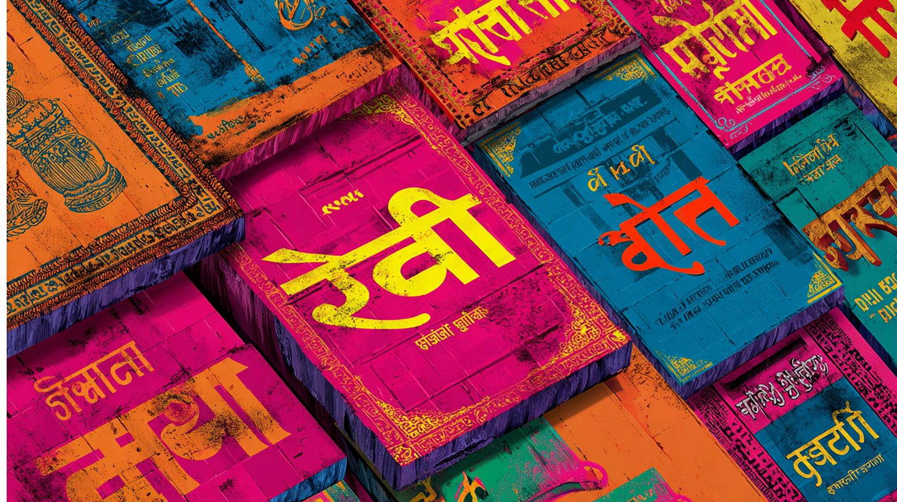
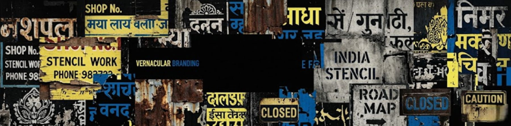

Vernacular Branding
Two Generations. Two Perspectives. One Visual Language.


Bridging fifty years of Indian design education with contemporary European architectural discourse.
Prof. Bhuleshwar “Arun” Mate
The Archivist & Academic Pillar
Prof. Bhuleshwar Mate (Arun Mate) is a distinguished designer and academician with over 50 years of influence on Indian visual culture. As the former Vice Chancellor of Assam University and a former faculty member at the prestigious Sir J.J. Institute of Applied Art, Mumbai, he has shaped the pedagogical landscape of Indian design.
His career spans high-level corporate branding for global entities like Hyatt Regency and Holiday Inn, alongside specialized commissions for the International Film Festival of India. Through his Nagpur-based studio, Atelier EnvisionAr, he has spent decades documenting the “bottom-up” visual systems of the Indian street—bringing a lifetime of archival rigor to the Vernacular Branding project.

Kaushambi Mate
The Designer & Architectural Strategist
Kaushambi Mate is an architectural designer and planning specialist based in Germany. A former licensed architect in India, she explores the intersections of architecture, culture, identity, and design, examining how these elements influence built environments and the media we consume daily.
While at the Städelschule Architecture Class in Frankfurt, she co-curated The Feast, a performative exhibition about food and cultural identity that opened her path toward interdisciplinary dialogues. Her Master’s Thesis, Violating Architecture: Staging an Assemblage of Intrusions in the Discipline, and her subsequent project, Strange Contextualism: The Image, were recognized with the AIV Best Thesis Award at the Deutsches Architekturmuseum (DAM), Frankfurt, in 2016.
As the co-author and designer of Vernacular Branding, Kaushambi authored the book’s core material and established its visual framework. She brings an architectural perspective to the cityscape, examining how branding and social aesthetics function as “urban intrusions.” Since 2017, she has also contributed to brand identity projects as a creative partner at Envisionar Design Atelier, bridging her cross-border expertise in heritage restoration and modern design.
Why this Collaboration?
Vernacular Branding is an intergenerational and interdisciplinary dialogue that bridges half a century of Indian design pedagogy with contemporary architectural theory. The project is a synthesis of two distinct but complementary lenses:
- The Archive of a Lifetime: Drawing from Prof. Bhuleshwar Mate’s five decades of primary documentation, the project anchors itself in an unparalleled historical record of India’s ephemeral visual culture. His role as an academician and practitioner provides the essential “institutional memory” of a craft—hand-painted signage—that is rapidly disappearing.
- The Architectural Framework: Kaushambi Mate transforms this archive into a structured critique of the built environment. Applying the same rigorous methodology that earned her the AIV Best Thesis Award at the DAM Frankfurt, she authored and designed the book to treat vernacular identity as an “urban assemblage.” Her work moves the project beyond mere documentation, framing it as a vital resource for understanding how informal systems challenge and enrich formal urban structures.
Together, the authors offer a “local-to-global” perspective, celebrating the resilience of the Indian street while providing a sophisticated analytical tool for designers, architects, and anthropologists worldwide.
VIEW the Archive
Immerse yourself in five decades of documented visual culture.
Secure your copy of the limited hardcover publication, complete with rich illustration plates, academic essays, and extensive street-level design archives.